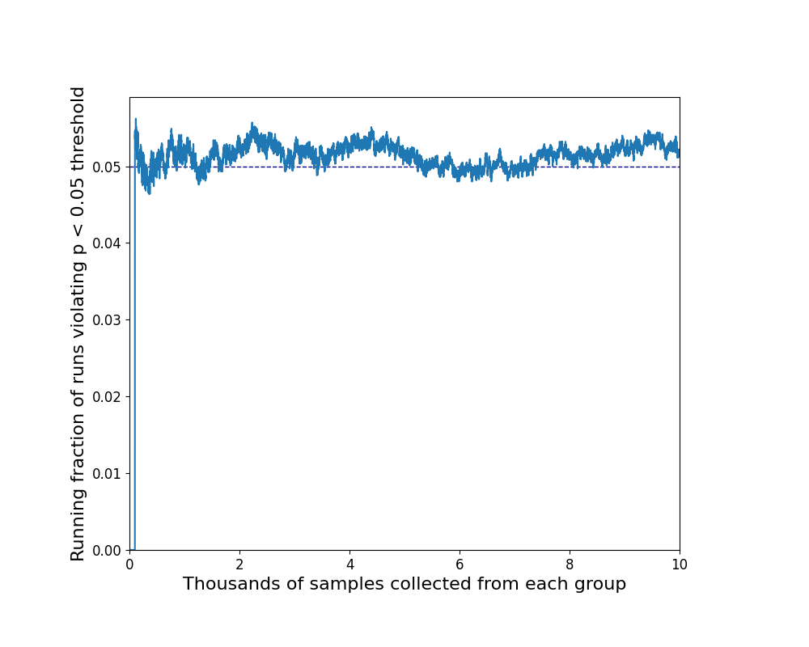
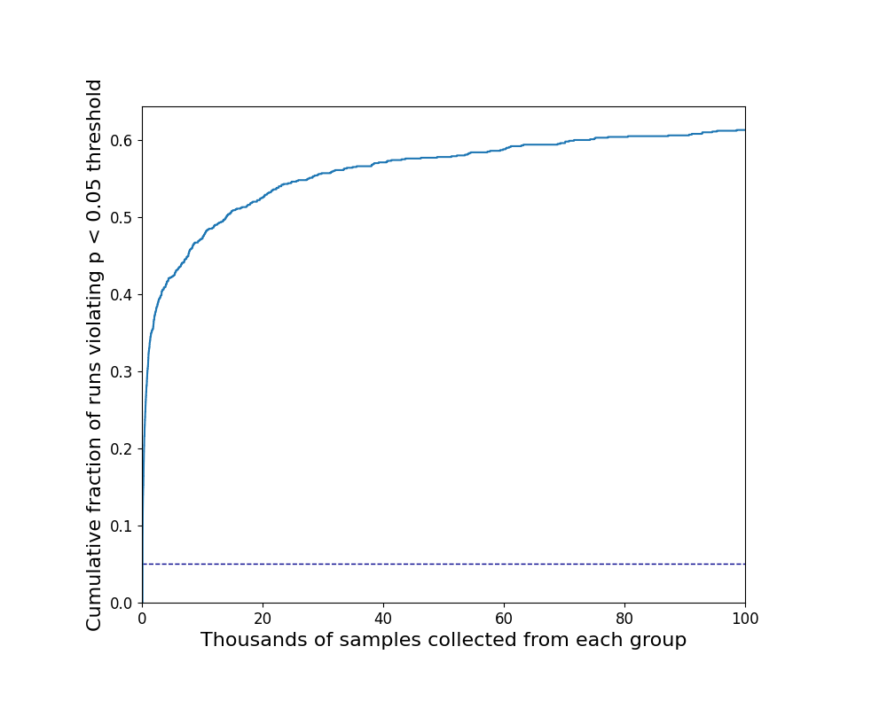
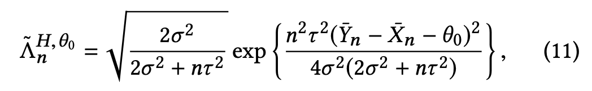
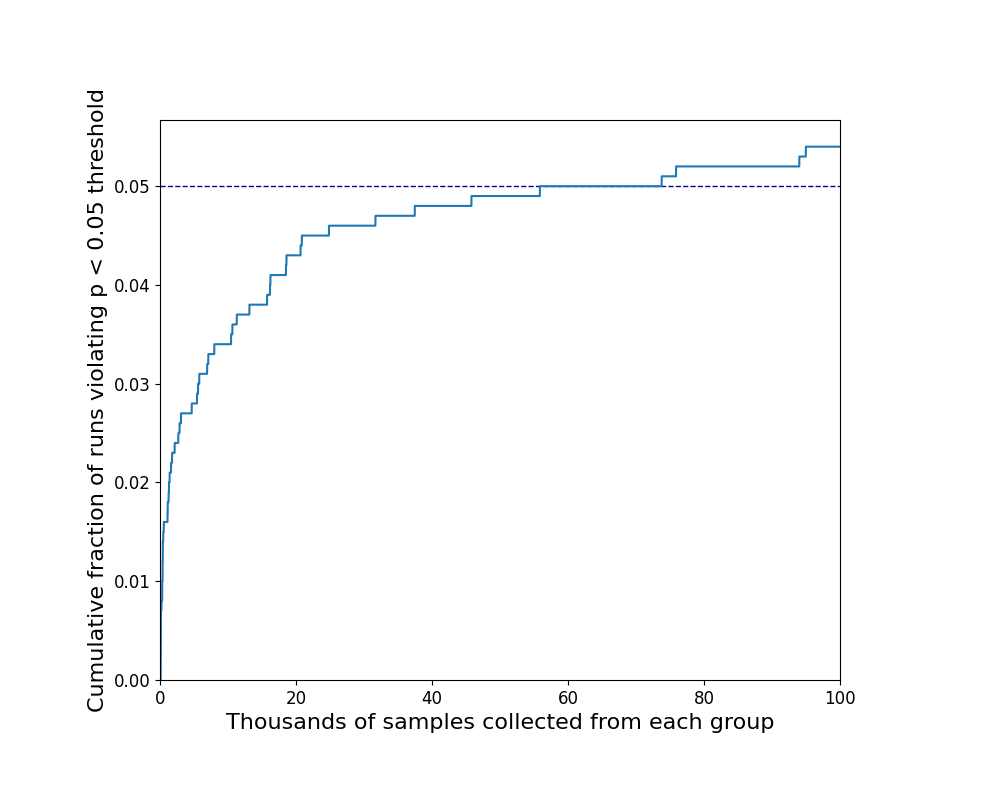

tl;dr: To counteract the significance inflation that comes from peeking during sequential experiments, multiply the standard error by φ = 1.618.
A watched pot never boils, but a watched plot (of a running t-test) boils over too soon. Continuously monitoring A/B tests results in a considerable over-estimation of statistical significance. Many tests that should not be considered significant get misinterpreted.
My first recommendation is don't use p-values. They are deeply problematic and will only make you regret your decisions. But if you are unable or unwilling to cut them out of your life, read on.
You will always peek
Significance testing and power analyses are built around the assumption that an experiment will run for a given amount of time, terminate, and only then will the results be examined. It's only valid if you wait until the end before looking. But try telling that to a product manager who wants early indicators about how a new feature is performing, and wants to know whether that bump in engagement is statistically significant. Or the stakeholder who asks you to put a running p-value in the dashboard so that statistical significance trends can be checked throughout an experiment. Or a graduate student who runs participants one at a time until their results become significant, out of a desperate desire to finish their dissertation and escape. We are not disciplined enough to wait until the end. We will always peek. The question is not how to prevent peeking, but how to account for it so it doesn't give us the wrong answer.
To understand how big the peeking problem is, let's look at a simulated A/B test where we already know what the answer should be. We'll set up our fake A/B test so that there is no difference between the two groups; we know that the difference between the actual means is zero. A t-test at the 95% significance level should fail to reject the null hypothesis 95% of the time. Only 5% of simulation runs should show p < 0.05.
Calculating 95% statistical significance
At any given point, having collected N observations from both group A and group B, we can run a t-test and calculate a p-value for the difference between the groups. It's helpful to ignore the first ~100 observations. They swing wildly, and I'm assuming that we're looking at testing scenarios involving a minimum of 1,000 observations. (If we're doing A/B testing on < 100 observations that's a different problem.)
At N > 100 we can ignore the subtleties of unbiased estimation and degrees of freedom and conduct a z-test. If 𝜇A is the average of all the observed values of group A, 𝜇B is the average of all the observed values of group B, and 𝜎A2 and 𝜎B2 are the calculated variances of each group, then the pooled variance, 𝜎p2, is
𝜎p2 = 𝜎A2 / N + 𝜎A2 / N
and the standard error, 𝜎e, is
𝜎e = √( 2𝜎p2 / N )
and the z-statistic is
z = ( 𝜇A - 𝜇B ) / 𝜎e
The z-statistic can be converted to a p-value via a table or statistical software package. For two-sided tests, z > 1.96 corresponds to p < 0.05, a.k.a. the 95% threshold for statistical significance.
Experiments pop in and out of significance
We are not expecting an all-or-nothing, always correct answer. With statistical testing, we only deal in probabilities and possibilities. The nature of the p < 0.05 threshold is that, even when there is no difference between the population means (as is our case) the test will still show a statistically significant difference 5% of the time. As we collect more observations, our estimates of the means and their variances will fluctuate, and so will the p-value of the test.
If we repeat this experiment 10,000 times we can verify that, for any given sample size N, about 5% of experiments (500 of them) will register as statistically significant at the 95% level. This is exactly what we would expect. It's reassuring to verify that statistics works as advertised.

What this means is that if we were disciplined enough to set up an A/B test, choose our N, and not peek at the results until it had run its course, then we could have confidence in the results. Only one time in twenty would we expect two groups with the same mean to come up as significantly different.
But sadly this is not how it will play out.
Most experiments drift below the p < 0.05 threshold
Because we are impatient and under outside pressures and are personally invested in our experimental outcomes we will all peek at the results. Most often this involves watching the p-value like a hawk and declaring significance once it falls below 0.05. Because significance levels weave around like a sleepy toddler, most (if not all) experiments eventually cross this line.
To measure the impact of continuous peeking we can keep track of the cumulative fraction of experiments that have reached significance at some point previously. In our simulation we can see that after 100 thousand observations of each group, a full 60% of the simulations have supposedly reached significance. Because we designed this example from the ground up we know that number to be grossly incorrect.

How long you look matters
To make things worse, the longer you look the worse it gets. I ran experiments out to N = 10 million and the curve retained its roughly logarithmic shape. It grew more slowly, creeping up with each order of magnitude, but never fully plateaued. I expect that if you look long enough (say, until the heat death of the universe) the curve will climb arbitrarily close to 1.
How often you check matters
It also matters how often you peek. Experiments sometimes cross the significance threshold very briefly. If you recalculate the p-value after every new observation you will catch every crossing, but if you only peek every 10 or 100 or 1,000 observations you'll miss some of those forays. The more often we peek, the greater the significance inflation. To remove this additional source of variability from the analysis, I'll assume that peeking occurs with every observation.
A fix: The Optimizely correction
The problem of peeking in A/B tests was addressed in a paper Peeking at A/B Tests: Why it matters, and what to do about it by Ramesh Johari, Pete Koomen, Leonid Pekelis, and David Walsh. It describes work done at Optimizely that was integrated into the Optimize Stats Engine, an integral part of its product offerings. The paper develops a variant of p-value that lets you check it as often as you like without introducing a bias for false positives, an “always valid p-value for sequential testing.”
The key result is Equation 11 from the paper.

where pn = 1 / 𝚲n
In Python this looks like
Lambda = np.sqrt((2 * var_p) / (2 * var_p + n * tau**2)) * np.exp(
(n**2 * tau**2 * (estimate) ** 2)
/ (4 * var_p * (2 * var_p + n * tau**2) + epsilon)
)
with the variable name substitutions
var_p = 𝜎2
tau = 𝜏
estimate = YN - XN =
𝜇A - 𝜇B
and epsilon is a small number added
for numerical stability.
Find
the full implementation here.
The one quantity not fully specified in the Optimizely equation is 𝜏. This is an arbitrary constant, subject to selection and adjustment. 𝜏 = 1 seems to be a good, justifiable place to start based on other examples in the paper. Optimizely’s secret sauce is a combination of simulations, user studies, and empirical analyses on their data to determine how best to tweak 𝜏.
We can verify the Optimizely correction in our simulation. On the bright side, it eliminates the problem of significance inflation. However, it may overcorrect for it. In the majority of the examples I ran, there was no value of 𝜏 I could find that correctly calibrated the p-value and resulted in a cumulative significance of 0.05. For those that failed, the cumulative significance never got higher than 2-3%. For the minority of cases that did reach 5% significance, successful values of 𝜏 ended up being in the 0.05 - 0.10 range.
A simpler fix: Adjusting the standard error
While it avoids reporting inflated significance levels, the Optimizely solution is somewhat convoluted and often overly conservative. And although it is principled, it still requires some manual tuning of the 𝜏 parameter. This raises the question of whether we can find a simpler method that might get equally good results. It turns out we can.
Multiplying the standard error by a constant φ, when calculating the z-statistic can generate a similar effect.
z = ( 𝜇A - 𝜇B ) / φ 𝜎e
Through trial and error, the mathematical constant known as the Golden Ratio (about 1.618), did the job well. Up to N = 100K, φ = 1.618 keeps the fraction of significance violations hovering close to 5% on average.
(φ is the Greek transliteration of the English letter f, as in false significance fudge factor.)

While this approach lacks the principled justification (and intimidating equations) of the Optimizely work, it is much easier to implement and faster to compute.
Also, the Golden Ratio! That has to mean something right? OK, it’s probably just a coincidence, but it's a cool coincidence. And who knows, maybe a better mathematician than me will come up with a reason why it has to be that way.
Other significance levels
Another good reason to believe that φ = the Golden Ratio is just a happy accident is that it only holds for p = 0.05. Different p-value targets require different amounts of adjustment to account for peeking.
| Target p-value | z-statistic | Range for φ | Mnemonic |
|---|---|---|---|
| 0.01 | 2.576 | 1.39 to 1.46 | ∛ e (1.396) |
| 0.05 | 1.960 | 1.59 to 1.62 | the Golden Ratio (1.618) |
| 0.10 | 1.645 | 1.75 to 1.78 | √ π (1.772) |
| 0.20 | 1.282 | 2.03 to 2.06 | 45 / 22 (2.044) |
All of these are empirical estimates. You can find the best φ for the particular p-target, sample sizes, and peeking frequency of your use case by modifying the code and running your own simulations.
Non-Normality
Technically this approach assumes normally-distributed data, but we can skirt this qualification criterion thanks to the magic of statistics, a.k.a. the Central Limit Theorem.
I tested the φ correction against other distributions to check how sensitive it would be to non-normality. It worked well for uniform and binary distributions. I was only able to see a slight degradation in performance when I went to an extremely long-tailed example–a log-normal distribution that spanned about 8 orders of magnitude. I'm comfortable claiming that for all practical purposes the method is insensitive to the shape of the distribution.
Caveats
To be totally clear, this method is a hack. It is not endorsed by any person or organization. It is not common practice in any community that I know of. It was an investigation driven purely by curiosity, and I was so pleased with what I found I wanted to share it.
There is a real possibility that I incorrectly implemented the Optimizely correction. I did my best to follow the paper, but I had to make a couple of small leaps. If you find any errors, please let me know.
The Bayesians among you will notice the glaring lack of mention of priors and credibile intervals. I know, I know. Philosophically I can't deny that Bayesian methods are a better way to get at what we're seeking here. But practically, introducing them to a broad audience in domains with generations of frequentist precendents is not a small thing. And even in a team that is prepared for them, when it comes to putting the methods into practice there is still the question of how to come up with domain-appropriate priors that aren't overly subjective, opening the another door for our external incentives to influence our analyses. It's a bear I'm still wrestling with.
This post is my own best shot at addressing the peeking problem, and I bear full responsibility for its shortcomings. I expect there are many and I look forward to hearing about them.